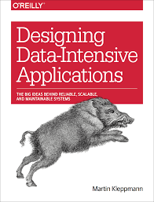

Bookshelf
-
Fooled by Randomness by Nassim Nicholas Taleb
An examination of the underestimated role of chance in life and the markets, challenging how we think about success and failure.
-
The Psychology of Money by Morgan Housel
Exploring the complex relationship between money and human behavior through 19 short stories about wealth, greed, and happiness.
-
Database Design and Implementation by Edward Sciore
A comprehensive guide to database system concepts, architecture, and implementation techniques.
-

Designing Data-Intensive Applications by Martin Kleppmann
A deep dive into building scalable, reliable, and maintainable data systems, exploring the principles and practices of modern data architecture.
-
Understanding Distributed Systems by Roberto Vitillo
A practical guide to the fundamental concepts and patterns behind modern distributed systems.
-
Building a Career in Software by Daniel Heller
A practical handbook for software engineers navigating their career path, from technical growth to professional development.